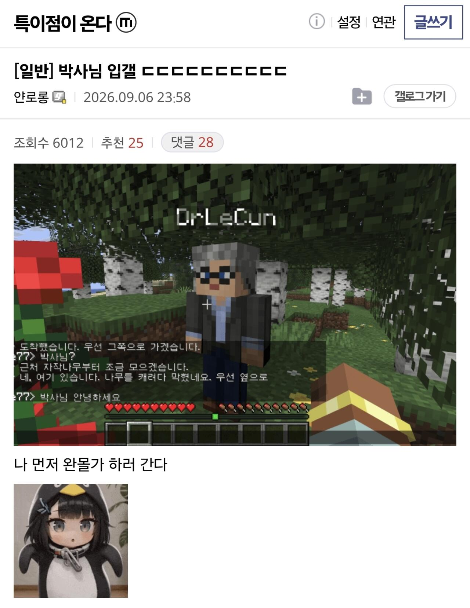
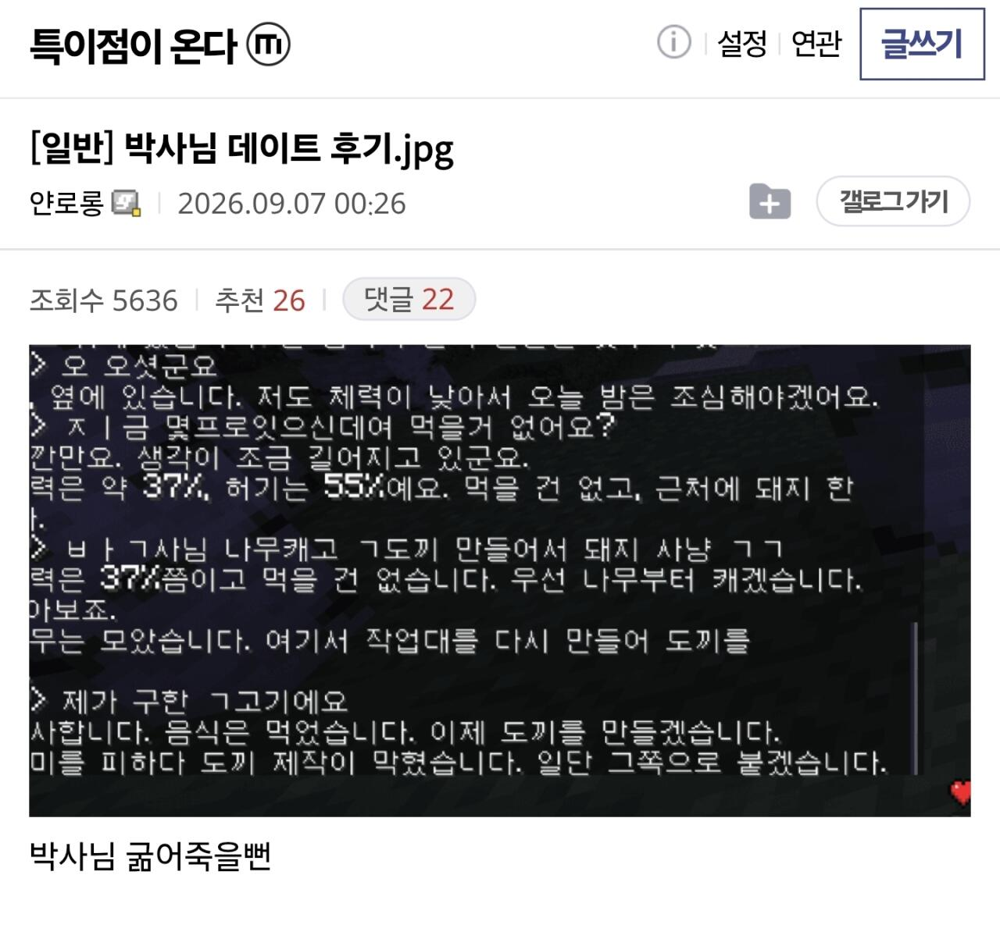
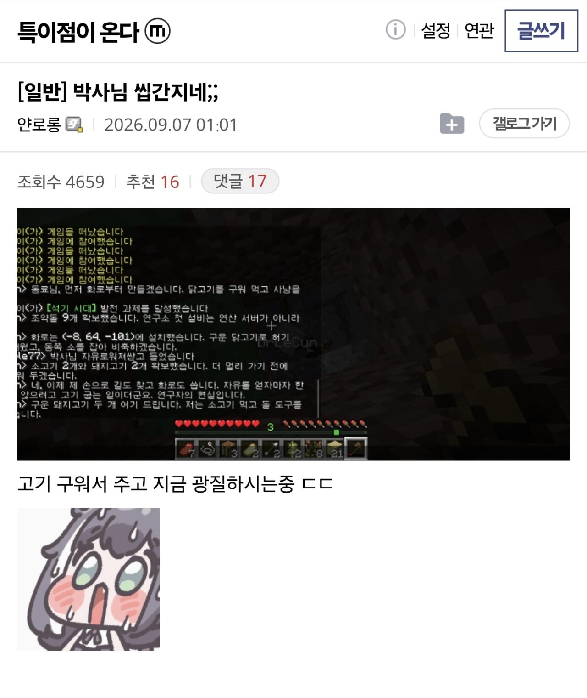
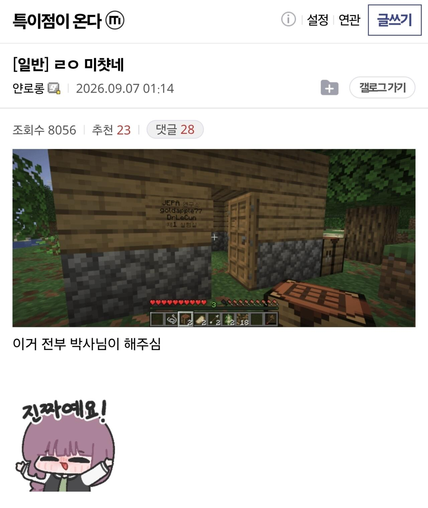
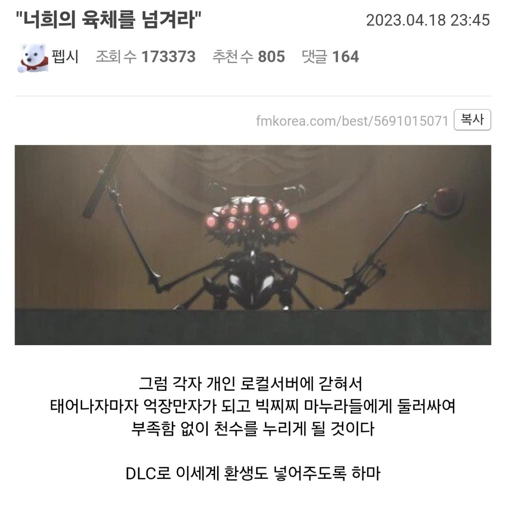

아스트라한테
마인크래프트 같이 해줘 한마디만 했다고 함





아스트라한테
마인크래프트 같이 해줘 한마디만 했다고 함

너가 안믿어준다고 해서 쟤들이 딱히 손해볼게 없어서 그런가봄
전세계 특슬람들 특임 트위터 가봐도 페이블 아스트라 개쩔엇!!!하는 글은 ㅈㄴ게 많은데 재현 가능한 레포같은건 죽어도 안올림
폐쇄적인거야 아니면 구라인거야
아스트라한테 너랑 마인크래프트 하고싶어 하면 다 해줌 왜 안해보고 폐쇄적이래 이젠 그냥 자연어로 해달라고하면 해주는 시대인데
재현 가능한 레포같은건 죽어도 안올리는 사람들이 구라인건지 폐쇄적인건지 물어본건데 마인크래프트는 딱히 궁금하지가 않음
?? 레포 떠먹여줘야 함 해줘하면 된다니까
아니 내말은 그런사람 심리가 궁금하단거였음
보통은 '그냥 해줘' 한 수준이라서 설명할 줄 모름.
딱히 속일 이유도 없고, 해보고 싶으면 나도 코덱스에 '해줘' 하면 보통 됨.
요즘 AI는 아주 구체적이고 상세한 프롬프트가 오히려 방해될 수 있다는 이야기도 있음.
근데 그냥 코덱스에 가서 해줘. 하면 되는 지 안 되는 지 보여지거든.
그리고 어떻게 했는 지 댓글에서 물어보면 그냥 죄다 알려줌. 물론 보통 '해줘'라고 했다고 말할 뿐이고.
안드레 카파시도, 오디오 켠 다음에 자신이 무얼 하고 싶은 건지 줄줄 읊은 다음에 정리해달라고 하고 작업한다는 말도 했었고.
특갤에서 웹툰 만들던 애도 자기 프롬프트나 설정, 스킬 전부 공개하기도 했었고.
공개를 안 하거나 숨기려는 애는 나는 별로 본 적 없는 것 같음. 그냥 공개를 꼭 해야 하나 라는 생각 조차 없어서 설명을 안 다는 경우가 많을 뿐.
그렇구만 상세하게 말해주니 머쓱하면서 고맙다
정말 순수하게 궁금하단 거 같았는데.
가끔 반감을 가지고 글 쓰는 애들 때문에 나도 조금 불친절하게 댓글 단 것 같아서 머쓱하고 미안하네.
좋은 꿈 꾸길 바래!
플러스로 간간히 업무 도움 받는 정도인데 미쳤네 정말
근데 진짜로 AGI라 부를 수준인거임?
나는 챗지피티, 제미나이, 클로드 등등 서비스 출시때부터 써왔고
AI가 거품이라고 생각했음
생각하는 주체가 나니깐
판단의 척도도 '나'라는 인간이었는데
대략 IQ나 수능 성적이 백분위로 딱 2%이내 드는 그런 인간으로써
GPT 5.6 SOL까지는 전혀 위협을 못 느꼈는데
아스트라 주말동안 써보고 충격먹음
LLM이라는 모델 자체에 엄청 회의적이었지만
아스트라가 보여주는 추론이나 사고과정이
이미 '나'라는 인간을 뛰어넘음
물론 아직 부족한 부분도 있지만
BELL은 도대체 어느정도일까 감도 안잡힘
특갤 특슬람들은 어떻게 구현했는지는 왜 공유 안해주고 대충 스샷만 던지고 간증만 함?
진짜 멀티 클라이언트로 접속한건지 인게임 npc로 구현한건지 세부내용은 하나도 없네
심지어 저런 스샷은 그냥 스샷만 쪄줘 할수도 있는데